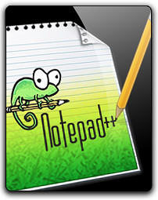

Ferramentas Utilizadas
| Ferramenta | Nome | Descrição |
|---|---|---|
| Trello | Aplicativo de gerenciamento de projeto baseado na web para trabalho em equipe, com um quadro, listas e cartões para evolução das tarefas. | |
| Microsoft Project | Ferramenta de gestão de projetos para simplificar negócios, conta com Power BI e Gráfico de Gantt. | |
| Excel | Editor de planilhas, utilizado para criação do gráfico de Burndown. | |
| MkDocs | Gerador de site estático para documentação simples, rápido e bonito para seu projeto. Feito em Python. | |
| Microsoft Teams | Plataforma unificada de comunicação e colaboração que combina bate-papo, videoconferências, armazenamento de arquivos e integração de aplicativos no local de trabalho. | |
| Aplicativo multiplataforma de mensagens instantâneas e chamadas de voz para smartphones e na versão web. Além de mensagens de texto, os usuários podem enviar imagens, vídeos e documentos em PDF, além de fazer ligações grátis por meio de uma conexão com a internet. | ||
| GitHub | Plataforma de hospedagem de código-fonte e arquivos com controle de versão usando o Git, através do mesmo a equipe contribuam em projetos privados e/ou Open Source de qualquer lugar do mundo. | |
| Wireframe | Site para desenvolver o designer dos protótipos de telas do aplicativo. | |
| VSCode | Editor de código-fonte que utilizamos para criação do aplicativo. | |
|  | Notepad++ | Editor de texto e de código fonte de código aberto sob a licença GPL. Suporta várias linguagens de programação rodando sob o sistema Microsoft Windows. Utilizado para criação da documentação juntamente com Mkdocs. |
| You Tube | Plataforma de upload e compartilhamento de vídeos, utilizada no projeto para adquirir conhecimento para criação do aplicativo. |
Tabela 1 - Ferramentas Utilizadas